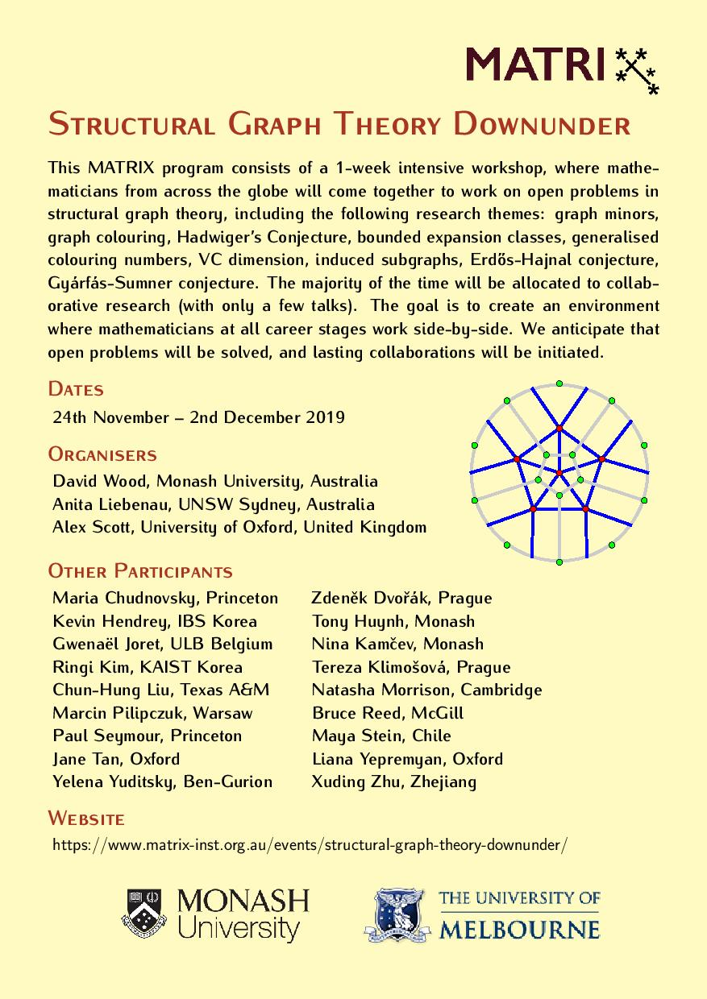
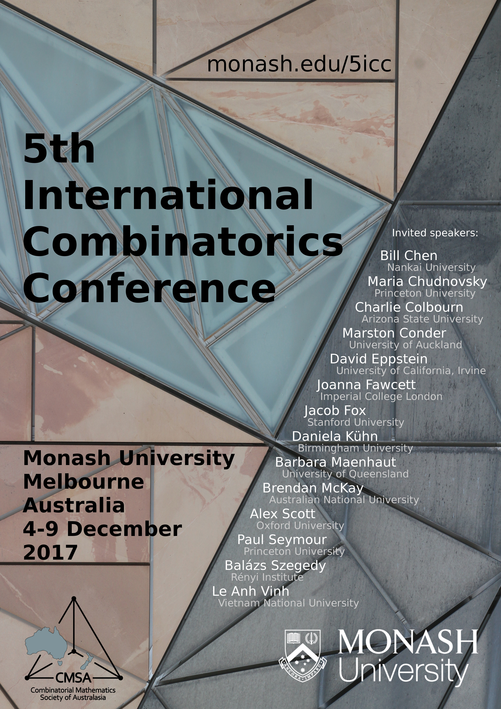
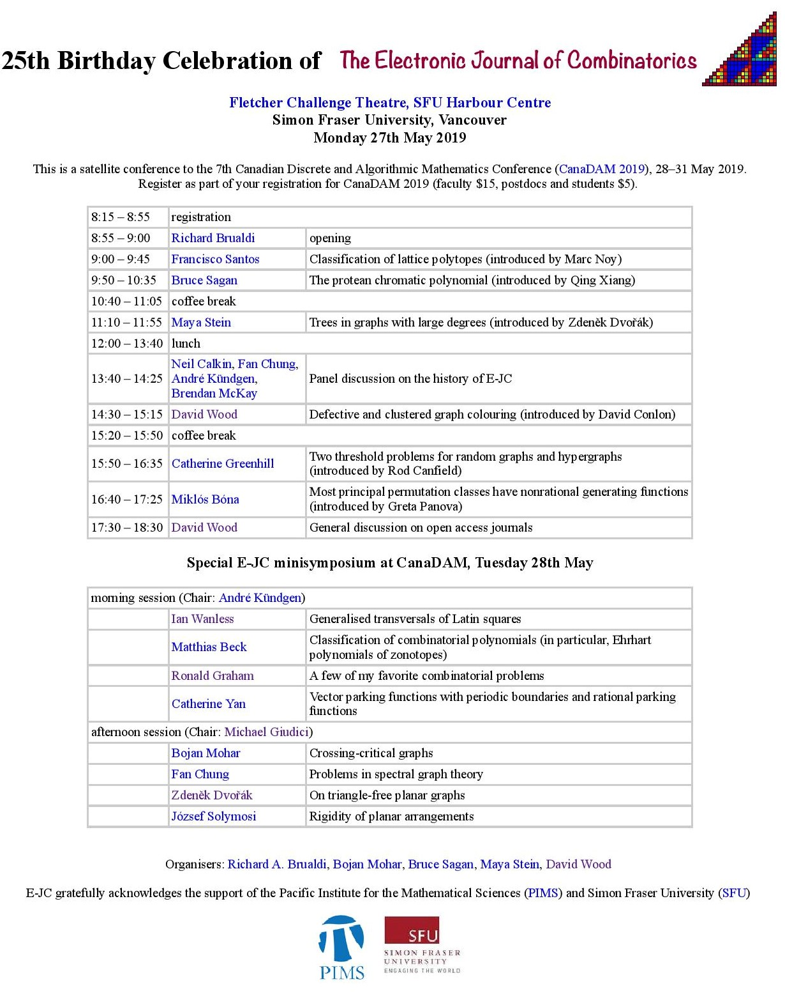
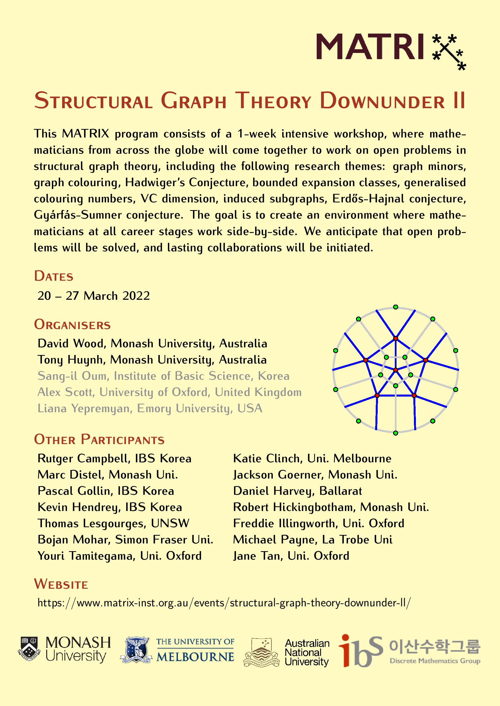

Co-Organised Workshops and Conferences
2026
- 2026 Barbados Graph Theory Workshop, Bellairs Research Institute, January 2026. Co-organisers: Paul Seymour, Rose McCarty, Sergey Norin
- 13th Annual Workshop on Geometry and Graphs, Bellairs Research Institute, January 2026. Co-organisers: Vida Dujmović, Luc Devroye, Pat Morin, Jit Bose, John Iacono, Stefan Langerman
- Global Structure and Geometry of Graphs, MATRIX, April 2026. Co-organisers: Vida Dujmović, Kevin Hendrey, Robert Hickingbotham, Pat Morin, Marcin Pilipczuk, Alex Scott
2025
2024
2023
- Structural Graph Theory Downunder III, MATRIX, April 2023. Co-organisers: Sang-il Oum, Alex Scott, Liana Yepremyan
- 10th Annual Workshop on Geometry and Graphs, Bellairs Research Institute, February 2023. Co-organisers: Vida Dujmović, Luc Devroye, Pat Morin, Jit Bose, John Iacono, Stefan Langerman
2022
- Second 2022 Barbados Graph Theory Workshop, Bellairs Research Institute, December 2022. Co-organisers: Paul Seymour and Sergey Norin
- Institute 424 Workshop on Graphs and Probability, Monash University, November - December 2022. Co-organiser: Vida Dujmović
- Structural Graph Theory Downunder II, MATRIX, March 2022. Co-organisers: Tony Huynh, Sang-il Oum, Alex Scott, Liana Yepremyan
- 2022 Barbados Graph Theory Workshop, Bellairs Research Institute, March 2022. Co-organisers: Paul Seymour and Sergey Norin
- 9th Annual Workshop on Geometry and Graphs (v2), Bellairs Research Institute, January 2021. Co-organisers: Vida Dujmović, Luc Devroye, Pat Morin, Jit Bose, John Iacono, Stefan Langerman
2021
- Graph Product Structure Theory, Banff International Research Station, November 2021. Co-organisers: Vida Dujmović, Pat Morin, Sergey Norin
- 2021 Barbados Graph Theory Workshop, Bellairs Research Institute, April 2021. Co-organisers: Paul Seymour and Sergey Norin --- CANCELLED
- 9th Annual Workshop on Geometry and Graphs, Bellairs Research Institute, January 2021. Co-organisers: Vida Dujmović, Pat Morin, Jit Bose, Stefan Langerman --- CANCELLED
2020
2019
- 2019 Barbados Graph Theory Workshop, April 2019. Co-organisers: Paul Seymour and Sergey Norin
- 7th Annual Workshop on Geometry and Graphs, Bellairs Research Institute, March 2019. Co-organisers: Vida Dujmović, Pat Morin, Jit Bose, Stefan Langerman
- Satellite Conference and Minisymposium,
25th Birthday Celebration of the Electronic Journal of Combinatorics, CanaDAM, Vancouver, May 2019. Co-organisers: Richard Brualdi, Bruce Sagan, Maya Stein
- Structural Graph Theory Downunder, MATRIX, November 2019. Co-organisers: Anita Liebanau and Alex Scott
- Special session on Combinatorics and Graph Theory, Australian Mathematics Society Annual Meeting 2019, Monash University, December 2019. Co-organiser: Joanne Hall.
2018
2017
- 5th Annual Workshop on Geometry and Graphs, Bellairs Research Institute, March 2017. Co-organisers: Vida Dujmović, Pat Morin, Jit Bose, Stefan Langerman
- 5th International Combinatorics Conference, Monash University, December 2017. Co-organisers: Ian Wanless, Anita Liebenau, Michael Brand, Graham Farr, Jane Gao, Daniel Horsley, Mikhail Isaev, Anita Liebenau, Kerri Morgan, Michael Payne, Nick Wormald
2016
- 4th Annual Workshop on Geometry and Graphs, Bellairs Research Institute, March 2016. Co-organisers: Vida Dujmović, Pat Morin, Jit Bose, Stefan Langerman
- Workshop Probabilistic and Extremal Combinatorics Downunder, Monash University, June 2016. Co-organisers: Nick Wormald, Brendan McKay, Jane Gao, Anita Liebenau.
2015
2014